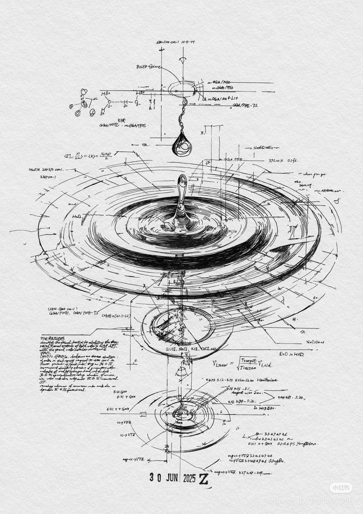

Universe under construction
Relational Universe of 2 3-Branes in Collision.
A new interpretation of the observed universe, developed through a series of independent papers still in progress.
A new interpretation of the observed universe, developed through a series of independent papers still in progress.
The current priority is not to “explain everything” at once, but to close pieces with mechanism: collision geometry, observational scales, medium perturbations, experimental analogies, and documents that can be read without depending on a previous conversation.
Annotated reading of the vertical sketch: antimatter drop, matter universe, observable and unobserved width, propagation fronts, and observer region between fronts.

The priority is still to close readable documents, not to inflate the system with new branches. The question is no longer “is there an idea?”, but which part is already closed enough to be read without extra context.
If this line is going to circulate, it should be accompanied by versioned PDFs, a short contextual note, and reading materials consistent with the main document.